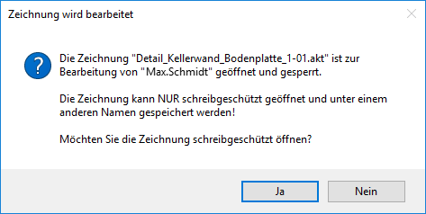
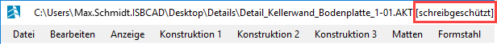

Die LKT-Datei ist ein Schutzmechanismus in ISBCAD. Die LKT-Datei wird erzeugt, wenn eine Zeichnung geöffnet wird und liegt im Verzeichnis, in dem sich die geöffnete Zeichnung befindet. Der Mechanismus verhindert, dass eine bereits geöffnete Zeichnung durch Sie oder einen Anwender ein zweites Mal geöffnet, bearbeitet, abgespeichert oder gelöscht werden kann.
Zeichnung schreibgeschützt öffnen
Wenn Sie eine geschützte Zeichnung öffnen, erhalten Sie eine Meldung, dass die Zeichnung durch die Bearbeitung eines anderen Anwenders gesperrt ist. Die Angaben zu Zeichnungs- und Benutzername werden Ihnen im ersten Absatz der Meldung angezeigt. In der Meldung können Sie auswählen, ob Sie die Zeichnung schreibgeschützt öffnen oder die Aktion abbrechen möchten. Wenn Sie mit Ja bestätigen, wird eine Kopie der geschützten Zeichnung erstellt. Sie können die Kopie bearbeiten und unter einem anderen Namen speichern.
 |
Eine schreibgeschützte Zeichnung erkennen Sie an dem Wort "(schreibgeschützt)" nach dem Dateipfad.
 |
Wann erscheint die Meldung, dass sich die Zeichnung in Bearbeitung befindet?
Dieses Verhalten tritt auf, wenn ISBCAD bestimmt, dass die LKT-Datei für das Dokument bereits vorhanden ist. Dies kann auftreten, wenn eine oder mehrere der folgenden Ursachen zutrifft:
·Auf demselben Rechner wird eine zweite Instanz von ISBCAD ausgeführt, in der die Zeichnung geöffnet ist. ·Die Zeichnung ist über das Netzwerk freigegeben und ein anderer Benutzer hat sie geöffnet. ·ISBCAD wurde zuvor nicht ordnungsgemäß beendet und daher wurde die LKT-Datei nicht gelöscht. In diesem Fall kann die LKT-Datei gelöscht werden. |
LKT-Datei löschen
Eine LKT-Datei kann nicht gelöscht werden; sie wird erst entfernt, wenn die Zeichnung geschlossen wird.
Ausnahme: ISBCAD wurde zuvor nicht ordnungsgemäß beendet und daher wurde die LKT-Datei nicht gelöscht. In diesem Fall kann die LKT-Datei gelöscht werden.
Siehe auch: